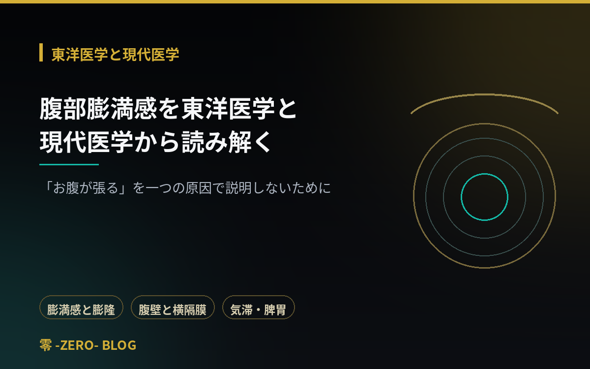
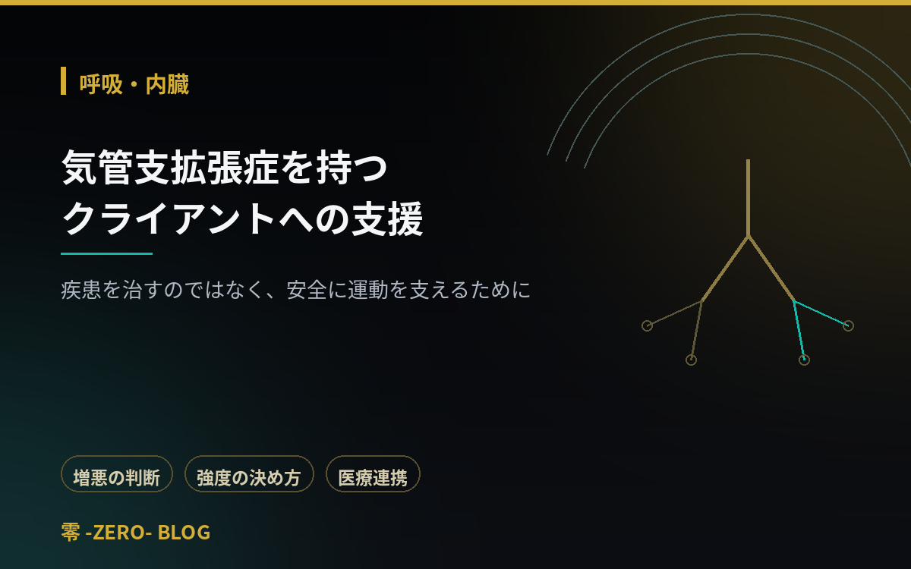
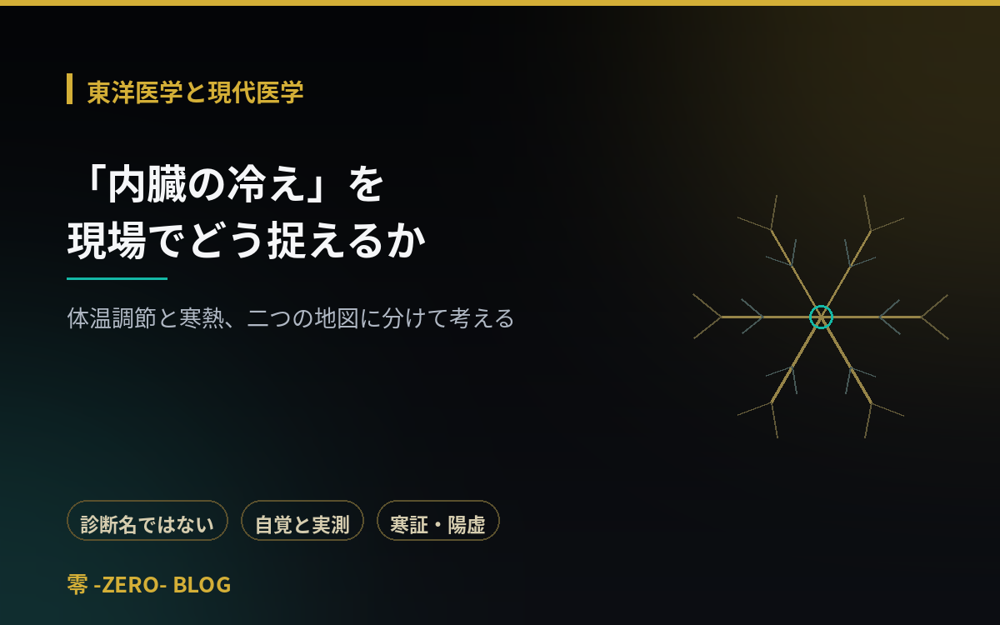
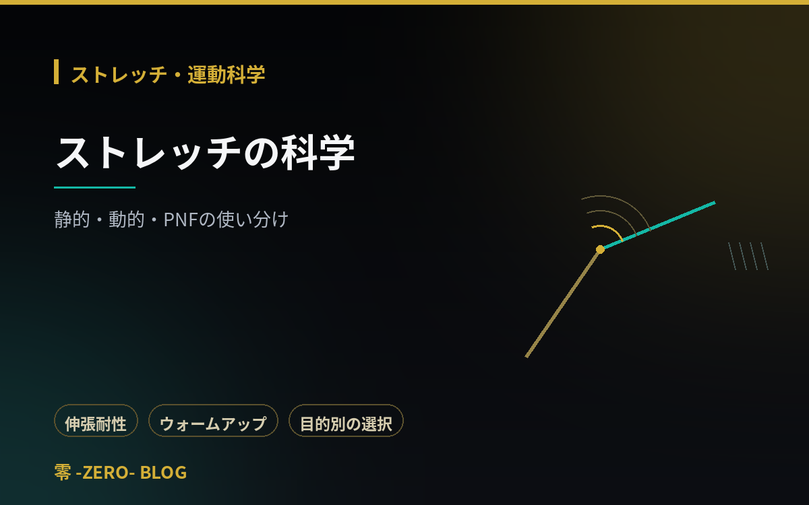
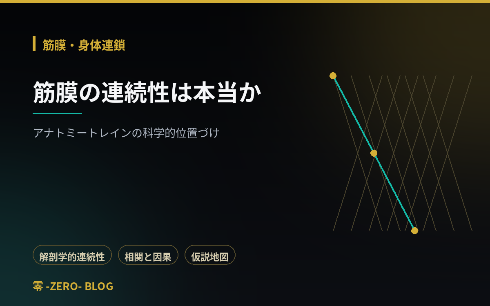
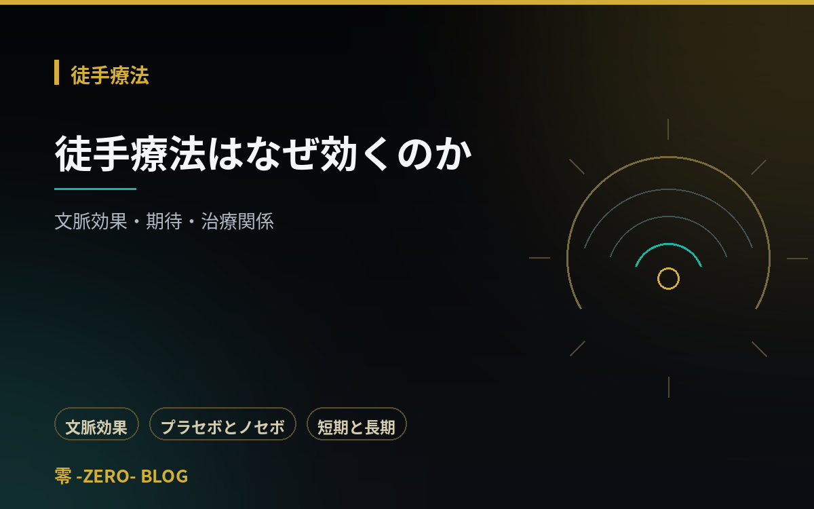
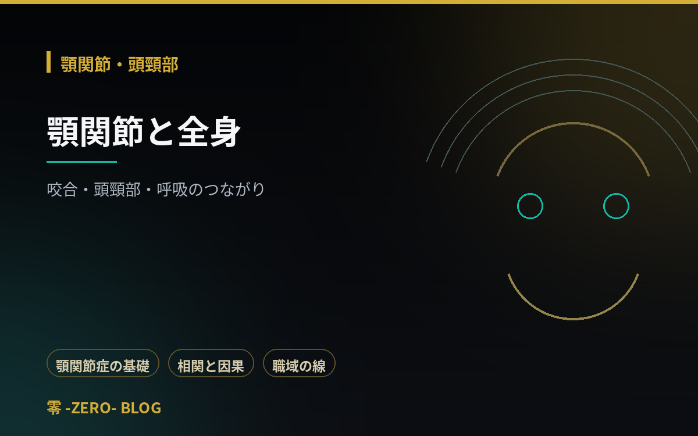
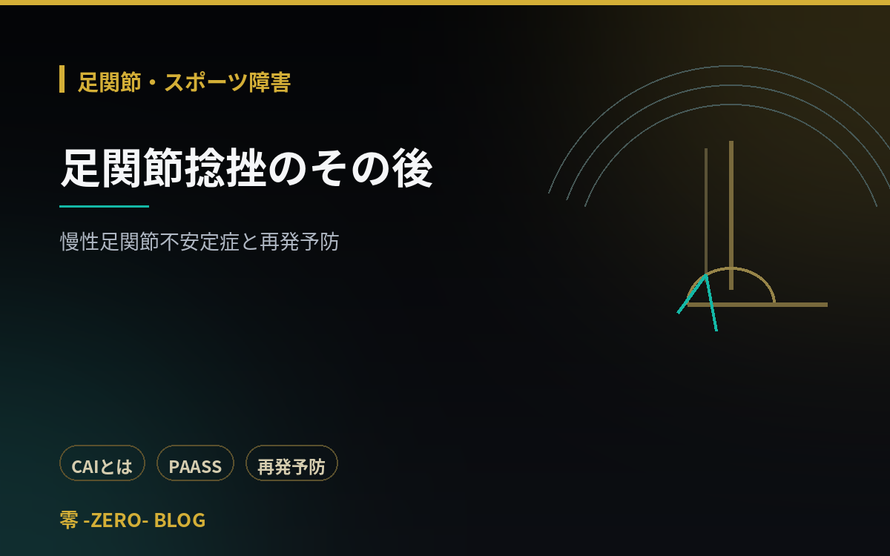
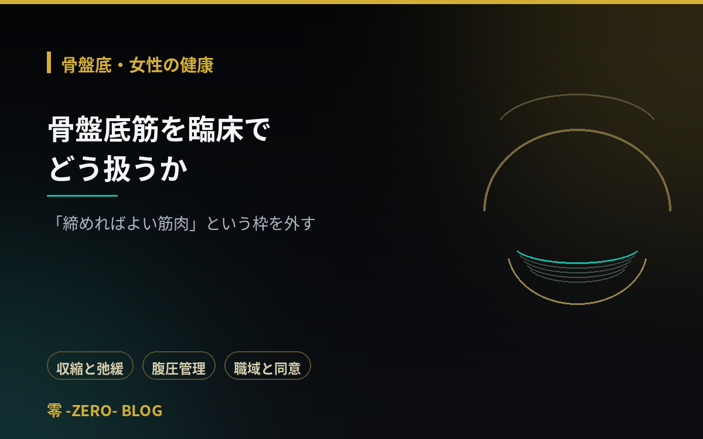
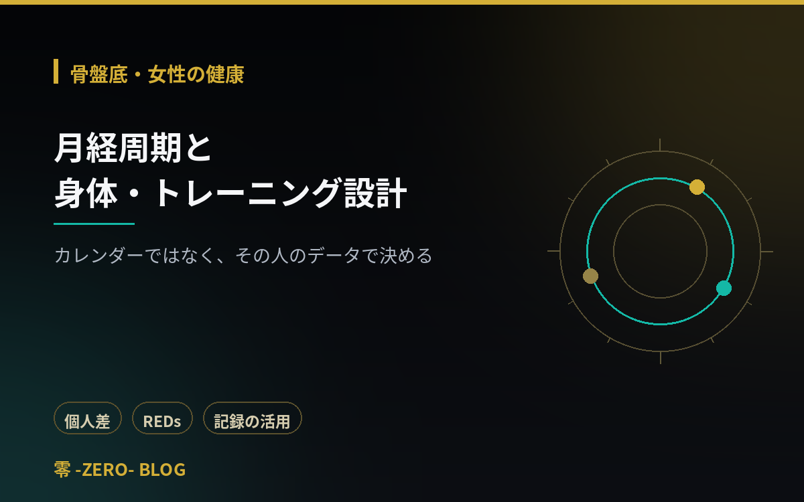

東洋医学と現代医学
2026.09.02
腹部膨満感を東洋医学と現代医学から読み解く
「膨満感」と「膨隆」の違いから、ガスだけでは説明できない腹壁と横隔膜の協調、内臓知覚過敏、東洋医学の気滞・脾胃・寒熱・湿という枠組みと限界まで。触れてはいけない状況も明示します。
2026年9月に公開された講義記事（全10件）の一覧です。東洋医学と現代医学、ストレッチ・運動科学、徒手療法、筋膜・身体連鎖、顎関節・頭頸部、足関節・スポーツ障害、骨盤底・女性の健康の各分野を収録。

「膨満感」と「膨隆」の違いから、ガスだけでは説明できない腹壁と横隔膜の協調、内臓知覚過敏、東洋医学の気滞・脾胃・寒熱・湿という枠組みと限界まで。触れてはいけない状況も明示します。

疾患の基礎と「増悪」という判断軸。運動が推奨される理由、自覚的運動強度と会話テストの使い方、呼吸困難感と酸素化を混同しないこと、排痰の職域と中止基準を整理します。

「内臓の冷え」は診断名ではないという前提から、冷感の自覚と実測の関係、確認したい生活・医学的背景、東洋医学の寒証や陽虚という枠組み、低温やけどや受診の目安まで。

可動域が増える理由を「伸張耐性」から捉え直し、運動前の静的ストレッチと時間の関係、目的別の使い分け、柔軟性と動作能力は別だという視点までを解説します。

解剖学的研究が示したことと、「原因である」との距離。解剖標本と生体の違い、経絡との類似を語る注意、遠隔介入後の変化を説明する複数の候補を整理します。

変化が出たことと構造変化が起きたことは別。文脈効果とプラセボ・ノセボの整理、恐怖を与える説明の問題、嘘をつかずに期待と安心を活かす方法をまとめます。

顎関節の構造と顎関節症の基礎、関節音の扱い方、頭頸部姿勢との関連についての研究と限界、咬合と全身をめぐる主張の位置づけ、職域と受診の目安を整理します。

Ottawa Ankle Rulesの位置づけと限界、急性期の考え方、慢性足関節不安定症、機械的・機能的不安定性の違い、PAASSによる復帰判断と再発予防まで。

「締める」だけでなく「緩む」ことも役割。過緊張という状態、ケーゲル運動を一律に行わせない理由、トレーニング中の腹圧管理、内診の職域と受診の目安を扱います。

暦だけでは局面を判定できないこと、集団平均を個人に当てはめる問題、月経随伴症状、REDsと無月経の扱い、記録を活かした負荷調整とプライバシー配慮を整理します。